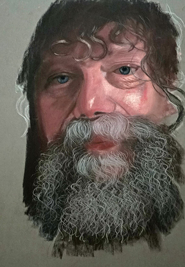

Ara ararauna
L'Ara bleu (Ara ararauna), également appelé Ara bleu et jaune ou Ara ararauna, est un grand perroquet du genre Ara facilement reconnaissable aux couleurs de son plumage. @tousdroitsréservés

Vieil homme barbu
Portrait d'un vieil homme réalisé à Montignac
@tousdroitsréservés
Léopard
Le Léopard ou Panthère (Panthera pardus) est une espèce de félins de la sous-famille des panthérinés.
Ce félin présente un pelage fauve tacheté de rosettes
@tousdroitsréservés